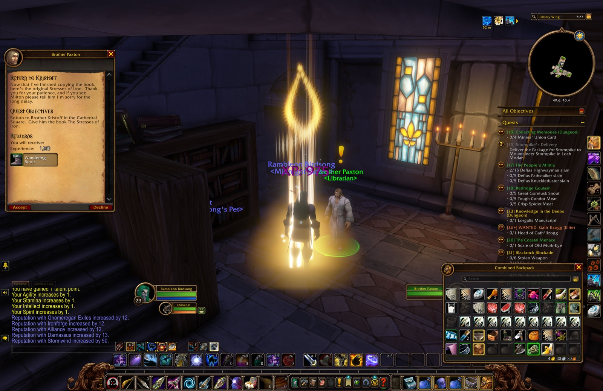
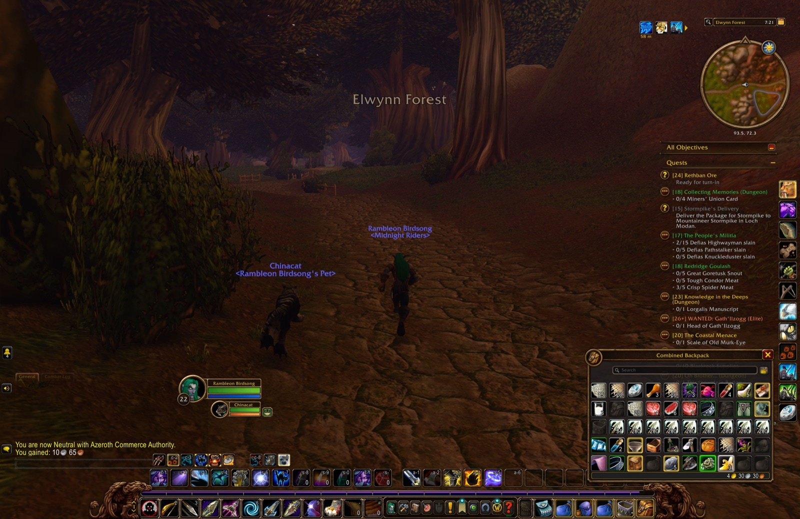
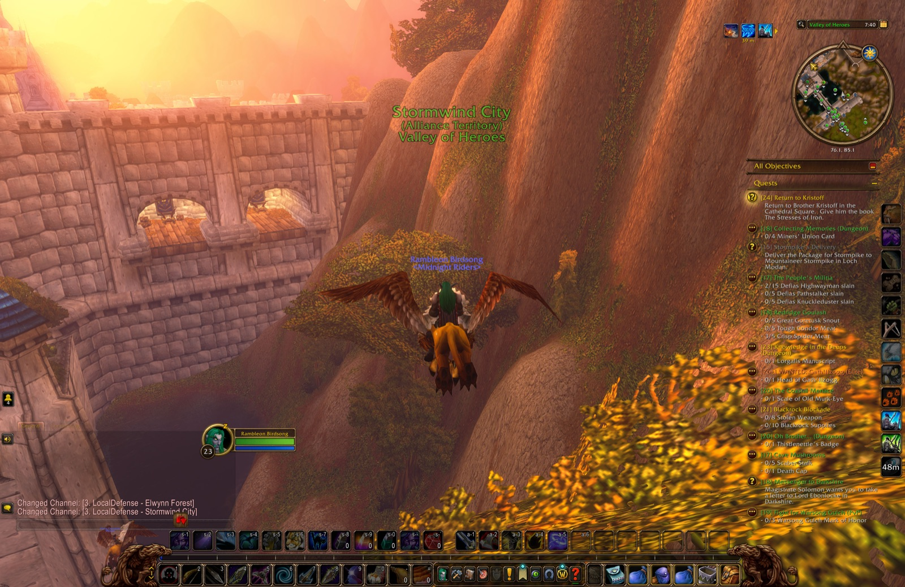
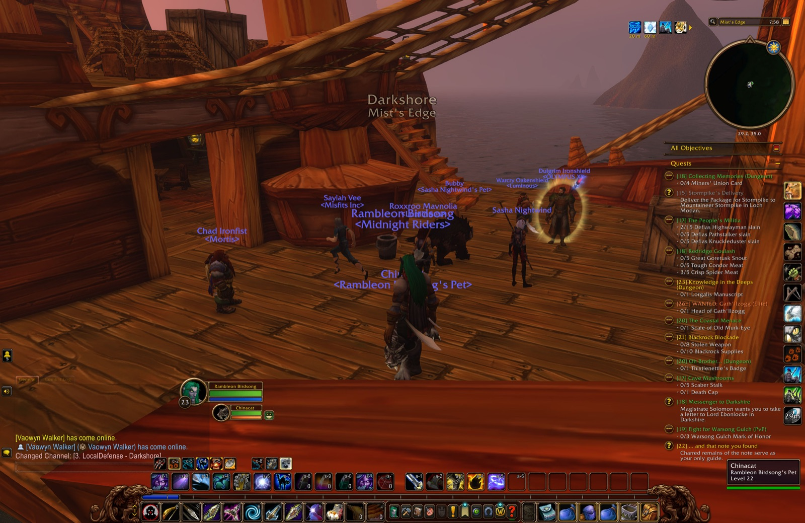
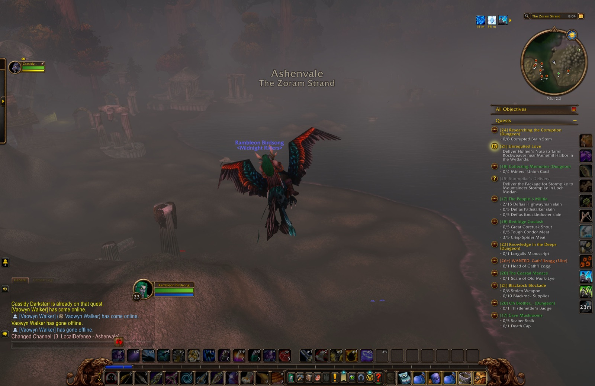
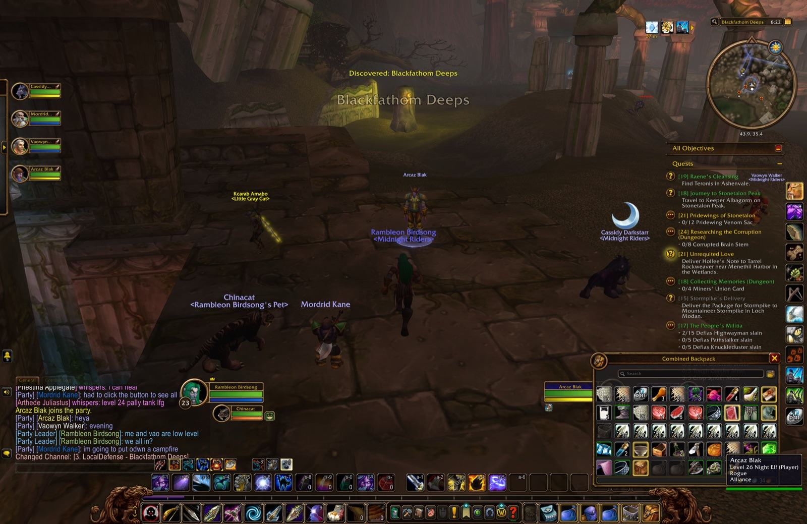
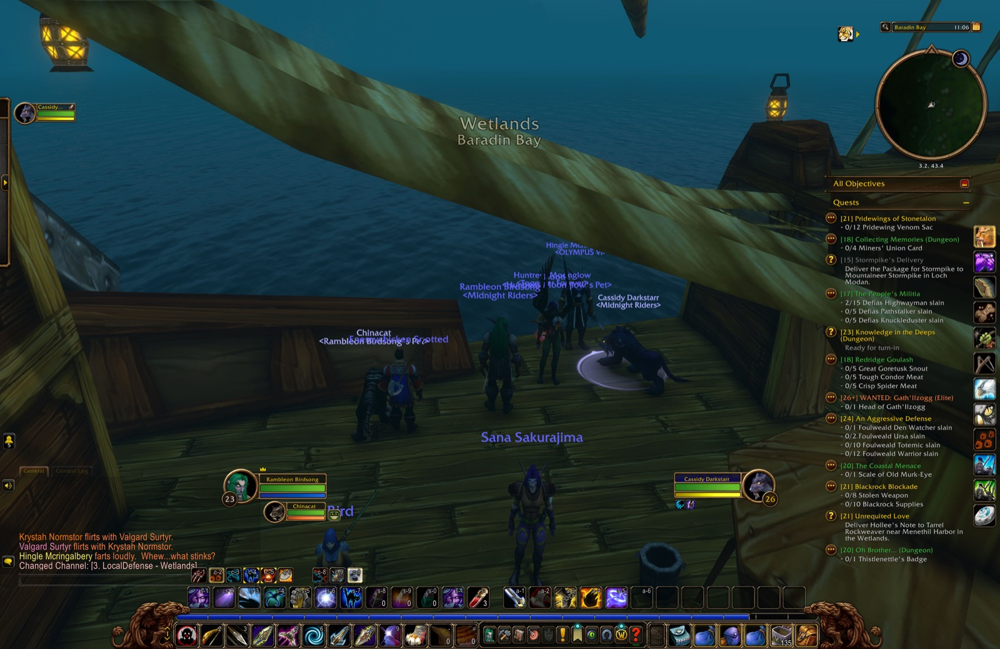
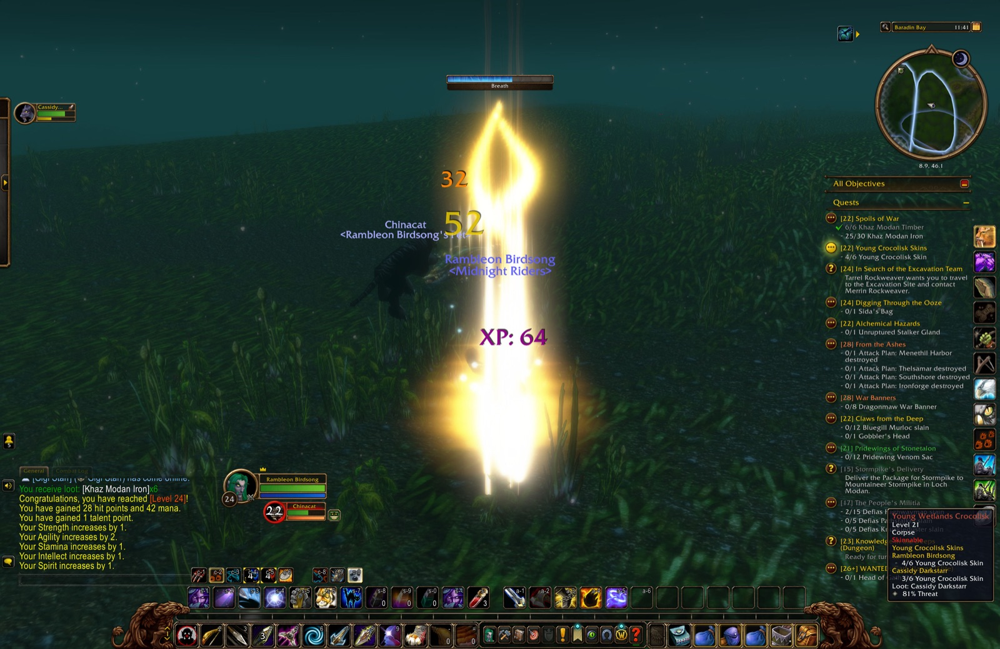

| Quest | Turned in at | Lv |
|---|---|---|
| Redridge Mountains | ||
| A Baying of Gnolls | Lakeshire | 22 |
| Howling in the Hills | Lakeshire | 22 |
| Blackrock Bounty | 22 | |
| Elwynn Forest | ||
| Rethban Ore | Library Wing | 22 |
| Stormwind City | ||
| Return to Kristoff | Cathedral Square | 23 |
| Blackfathom Deeps | ||
| In Search of Thaelrid | The Pool of Ask'ar | 23 |
| Ashenvale | ||
| Raene's Cleansing ×2 | Astranaar | 23 |
| Darkshore | ||
| Researching the Corruption | Auberdine | 23 |
| Wetlands | ||
| Unrequited Love | Menethil Harbor | 23 |
| Spoils of War | Menethil Keep | 24 |
| Quest | Picked up at |
|---|---|
| Pridewings of Stonetalon | Astranaar |
| Journey to Stonetalon Peak | Astranaar |
| Culling the Threat | Astranaar |
| Bathran's Hair | Maestra's Post |
| Blackfathom Villainy | The Pool of Ask'ar |
| An Aggressive Defense | Astranaar |
| Raene's Cleansing | Astranaar |
| Claws from the Deep | Menethil Harbor |
| The Third Fleet | Menethil Harbor |
| The Greenwarden | Menethil Harbor |
| Young Crocolisk Skins | Menethil Harbor |
| Bloom of the Heavens | Menethil Harbor |
| War Banners | Menethil Keep |
| From the Ashes | Menethil Keep |
| Alchemical Hazards | Menethil Harbor |
| Digging Through the Ooze | Menethil Harbor |
| In Search of the Excavation Team | Menethil Harbor |
| Quest | Picked up at | Since |
|---|---|---|
| On Guard in Stonetalon | Astranaar | Chapter 1 |
| The Tower of Althalaxx | Maestra's Post | Chapter 1 |
| ... and that note you found | Alexston Farmstead | Chapter 2 |
| Blackrock Blockade | Lakeshire | Chapter 2 |
| WANTED: Gath'Ilzogg | Lakeshire | Chapter 2 |
| WANTED: Incinerator Gar'im | Lakeshire | Chapter 2 |
| The Coastal Menace | Sentinel Hill | Chapter 2 |
| The Stockade Riots | Stormwind City | Chapter 2 |
| Messenger to Darkshire | Lakeshire | Chapter 2 |
| The People's Militia | Sentinel Tower | Chapter 3 |
| Gyrodrillmatic Excavationators | Dwarven District | Chapter 3 |
| Claiming Arathi Basin | Stormwind Keep | Chapter 3 |
| Save Techbot's Brain! | Tinker Town | Chapter 3 |
| Find Bingles | Tinker Town | Chapter 3 |
| The Day After | Tinker Town | Chapter 3 |
| Knowledge in the Deeps | The Forlorn Cavern | Chapter 4 |
| What Comes Around... | Lakeshire | Chapter 4 |
| Underbelly Scales | Lakeshire | Chapter 4 |
As far as Rambleon knows: a quest picked up before it was installed, or abandoned before it recorded that, is not here.
Krystah Normstor blows Valgard Surtyr a kiss.
Valgard Surtyr dances with Krystah Normstor.
Krystah Normstor flirts with Valgard Surtyr.
Krystah Normstor flirts with Valgard Surtyr.
Krystah Normstor flirts with Valgard Surtyr.
Valgard Surtyr flirts with Krystah Normstor.
Hingle Mcringalbery farts loudly. Whew...what stinks?
Krystah Normstor lies down before Valgard Surtyr.
Valgard Surtyr falls asleep. Zzzzzzz.
Krystah Normstor lies down before Valgard Surtyr.
Krystah Normstor lies down before Valgard Surtyr.






